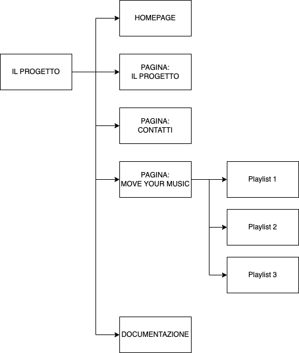

Move yuor Music nasce dal legame che da sempre esiste tra
il movimento del corpo e la musica. Qualsiasi attività indoor,
aerobica, acquagym, pilates, spinning sono scandite da ritmi specifici,
adeguati allo sforzo fisico che si vuole sostenere. Stiamo parlando di
musiche professionali, utilizzate dai trainer per ottimizzare il lavoro
proposto, ma si sa che la musica è la colonna sonora della nostra vita.
Ognuno di noi predilige certi generi rispetti ad altri, ed è per questo
che nei momenti di relax e di svago, solitamente, si ascolta la propria
playlist. Negli ultimi anni è diventato un bisogno sempre più impellente
quello di muoversi, riassaporando il beneficio di potere restare all’aperto
in mezzo alla natura, dopo la tragica parentesi della pandemia.
Il progetto nasce proprio da questi concetti fondamentali:
salute, natura e musica.
Ci si rivolge a chi, dopo una camminata o il jogging al ritmo della propria
musica preferita, vuole fare qualcosa in più per tonificare i propri
muscoli al ritmo della musica pensata da Move your Music. Si propongono
dei brani da scegliere in base ai gruppi muscolari che si vogliono
allenare. Move yuor Music propone delle playlist gratuite adeguate
a tonificare, con ritmi più o meno intensi di esecuzione. Per scoprire
gli esercizi appropriati, la corretta impostazione del corpo e il ritmo di
esecuzione si può scrivere una mail moveyourmusic@gmail.com, e i trainers
forniranno consigli utili, oltre la possibilità di fissare un appuntamento
per una prova gratuita.
PROJECT MANAGEMENT PLAN
Benchmarking
OBBIETTIVO
Riuscire a coinvolgere più persone a svolgere attività fisica cercando di implementare alla routine quotidiana dedicata alla camminata e/o jogging anche esercizi di tonificazione muscolare e flessibilità articolare.TARGET UTENTE
Il nostro utente “tipo” non è l’atleta e neppure l’assiduo frequentatore di club fitness, ma chi concepisce l’attività fisica a contatto con la natura. Donne e uomini, 35 – 60 anni, che si ritagliano uno spazio per sé stessi, per ritrovare il benessere psico-fisico.COMPETITOR
L’analisi di possibili competitor è stata svolta sia nel campo degli allenamenti fitness/sportivi, sia nel campo musicale. Nel settore sportivo professionale esistono moltissimi competitor che offrono musiche programmate ad hoc per qualsiasi attività, da quella più intense per il cycling indoor a quelle meno intense come il pilates, fino ad arrivare allo yoga-(esempi: www.musicforfitness.com-www.jacopococcia.com-www.technogym.com.) In ogni caso questo non è l’obiettivo del progetto, infatti la maggior parte delle persone che utilizzano la musica per relax e svago si affidano a YouTube e Spotify. Quest’ultimo risulta più che mai utile dal momento che possono utilizzare la stessa piattaforma per svolgere gli esercizi ideati da Move Your music.STRUTTURA LAYOUT
Look: si è utilizzato il colore verde, per rifarsi alla natura, ma anche per permettere all’utente di “ricollegarsi” visivamente a Spotify, bianco e il nero per evidenziare i concetti fondamentali.
LINGUAGGI E STRUMENTI
- - HTML
- - Javascript
- - Bootstrap
- - CSS
- - Spotify: appositamente scelto perché permette l’allenamento con la musica contemporaneamente sullo stesso dispositivo
- - GitHub: per la pubblicazione
- - BootstrapMade.com: per la scelta del template di base
- - PicsArt.com: per generare il logo